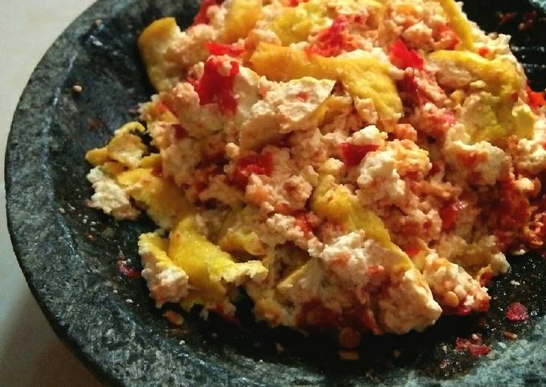

Tahu bodo
Ingredients
- 5 yellow tofu
- 7 red chillies
- 2 garlics
- 1/2 tsp salt
- 1/2 flavoring
- 1 tbsp sugar
Cook
- Fried tofu and garlic (half cooked)
- Grind red chillies, garlics, salt, sugar and seasoning
- Add 1 tbsp of hot oil used for frying the tofu, then coarsely grind the tofu with the chili sauce
- The tahu bodo is ready to be served

Visit Cookpad for more recipes